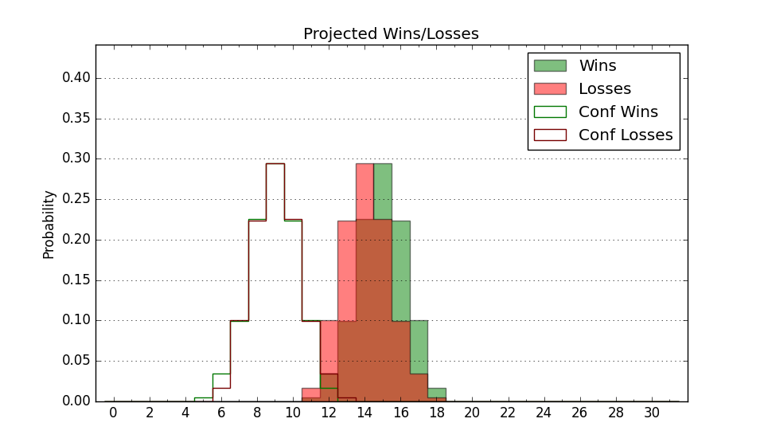

| Home | Game Probabilities | Conferences | Preseason Predictions | Odds Charts | NCAA Tournament |
| City: | Harrisonburg, Virginia | |
| Conference: | Sun Belt (11th)
| |
| Record: | 4-6 (Conf) 10-11 (Overall) | |
| Ratings: | Comp.: -4.9 (217th) Net: -5.1 (219th) Off: 109.5 (153rd) Def: 114.5 (282nd) SoR: 0.0 (119th) |
| Remaining | ||||||
|---|---|---|---|---|---|---|
| Date | Opponent | Win Prob | Pred. | |||
| 1/31 | @ Southern Miss (257) | 44.8% | L 73-74 | |||
| 2/4 | Louisiana Lafayette (333) | 87.8% | W 73-61 | |||
| 2/12 | Georgia St. (267) | 75.6% | W 76-69 | |||
| 2/14 | Appalachian St. (197) | 60.6% | W 69-66 | |||
| 2/18 | @ Coastal Carolina (225) | 37.8% | L 70-73 | |||
| 2/21 | @ Georgia St. (267) | 47.7% | L 72-73 | |||
| 2/25 | Georgia Southern (239) | 70.7% | W 83-77 | |||
| 2/27 | Coastal Carolina (225) | 67.4% | W 74-69 | |||
| Previous | Game Score | |||||
| Date | Opponent | Win Prob | Result | Off | Def | Net |
| 11/3 | @Akron (66) | 7.9% | L 71-85 | -11.1 | 12.6 | 1.5 |
| 11/9 | Coppin St. (364) | 97.7% | W 84-70 | -14.3 | -5.4 | -19.7 |
| 11/12 | @Longwood (273) | 48.7% | L 72-82 | -7.3 | -3.1 | -10.4 |
| 11/15 | @LIU Brooklyn (204) | 32.4% | L 79-88 | -3.6 | -1.6 | -5.2 |
| 11/18 | Towson (175) | 55.4% | W 81-75 | 26.1 | -16.6 | 9.5 |
| 11/24 | @FIU (187) | 29.5% | W 80-72 | 5.6 | 14.0 | 19.6 |
| 11/25 | (N) Nebraska Omaha (246) | 57.5% | W 88-77 | 27.2 | -5.5 | 21.7 |
| 11/29 | @George Mason (85) | 10.7% | L 66-82 | 1.1 | -1.3 | -0.2 |
| 12/3 | North Carolina Central (345) | 90.3% | W 67-62 | -20.0 | 1.4 | -18.6 |
| 12/6 | Norfolk St. (303) | 82.5% | W 68-67 | -10.9 | -1.9 | -12.9 |
| 12/17 | @Old Dominion (231) | 39.5% | L 68-77 | -6.5 | -5.1 | -11.6 |
| 12/20 | @Georgia Southern (239) | 41.5% | L 92-96 | 8.5 | -4.8 | 3.7 |
| 12/29 | @Arkansas (19) | 2.0% | L 74-103 | 10.6 | -11.0 | -0.4 |
| 1/3 | @Arkansas St. (164) | 25.3% | W 78-74 | 2.7 | 13.1 | 15.8 |
| 1/7 | Marshall (151) | 50.3% | L 64-66 | -11.3 | 3.4 | -8.0 |
| 1/10 | Old Dominion (231) | 68.9% | W 70-69 | -11.4 | 5.9 | -5.4 |
| 1/15 | @Appalachian St. (197) | 31.1% | L 65-80 | 3.3 | -19.2 | -15.9 |
| 1/17 | @Marshall (151) | 22.9% | L 72-77 | -2.5 | 3.4 | 0.9 |
| 1/22 | South Alabama (192) | 59.9% | L 83-90 | -2.5 | -13.7 | -16.2 |
| 1/24 | Texas St. (286) | 78.6% | W 82-57 | 14.7 | 11.1 | 25.7 |
| 1/29 | @Troy (127) | 17.5% | W 73-64 | 4.3 | 23.8 | 28.1 |
| Stats & Trends | |||||
|---|---|---|---|---|---|
| Current | Day | Week | Month | Season | |
| Composite | -4.9 | +1.5 | +2.7 | +1.4 | -4.4 |
| Comp Rank | 217 | +10 | +20 | +11 | -91 |
| Net Efficiency | -5.1 | +1.6 | +3.0 | +2.5 | -- |
| Net Rank | 219 | +10 | +25 | +25 | -- |
| Off Efficiency | 109.5 | +0.3 | +1.4 | +0.5 | -- |
| Off Rank | 153 | +12 | +20 | +4 | -- |
| Def Efficiency | 114.5 | +1.3 | +1.5 | +2.0 | -- |
| Def Rank | 282 | +18 | +21 | +34 | -- |
| SoS Rank | 219 | +20 | +13 | +19 | -- |
| Exp. Wins | 14.9 | +1.2 | +1.6 | +0.4 | -3.2 |
| Exp. Conf Wins | 8.9 | +1.2 | +1.6 | +0.4 | -2.9 |
| Conf Champ Prob | 0.0 | +0.0 | +0.0 | -0.5 | -26.3 |

| Advanced Stats | ||
|---|---|---|
| Stat | Value | Rank |
| Off Eff FG % | 0.519 | 152 |
| Off Ast Ratio | 0.141 | 220 |
| Off ORB% | 0.288 | 225 |
| Off TO Rate | 0.151 | 203 |
| Off FT Ratio | 0.342 | 215 |
| Def Eff FG % | 0.508 | 161 |
| Def Ast Ratio | 0.146 | 178 |
| Def ORB% | 0.302 | 171 |
| Def TO Rate | 0.106 | 360 |
| Def FT Ratio | 0.429 | 318 |